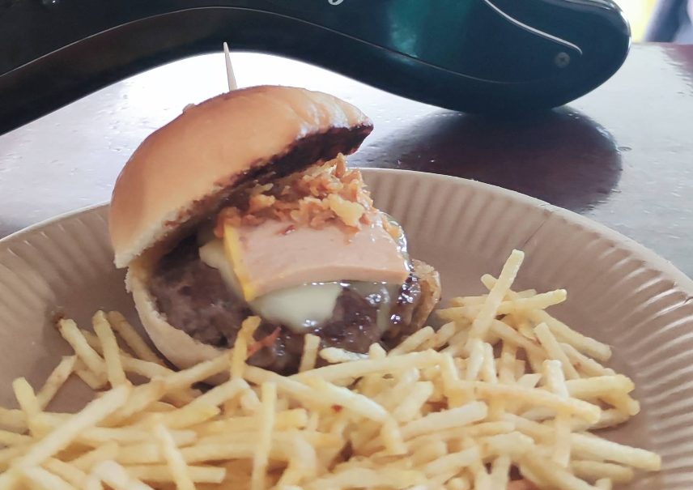

Terraza grande
Un espacio al aire libre para alargar la sobremesa, con amigos o en familia.
Bar · Tapas · Empanadas · Música en directo
El sitio para tomar algo con calma, picar bien y quedarte a escuchar música. Terraza grande, empanadas y buen ambiente en el barrio.
Qué te espera
Un espacio al aire libre para alargar la sobremesa, con amigos o en familia.
La especialidad de la casa, con sabores que cambian a lo largo de la semana.
Conciertos y sesiones abiertas, sobre todo los domingos. Pregunta por la programación.
Fútbol, motos y otros eventos en directo, para verlos con ambiente.
Domingos
Los domingos, el bar se llena de música. Ven a comer, quédate a escuchar y no te pierdas la próxima sesión.
Pregunta por la programaciónEl bar



Mira la carta, consulta el horario o pásate directamente. Estamos en el barrio.